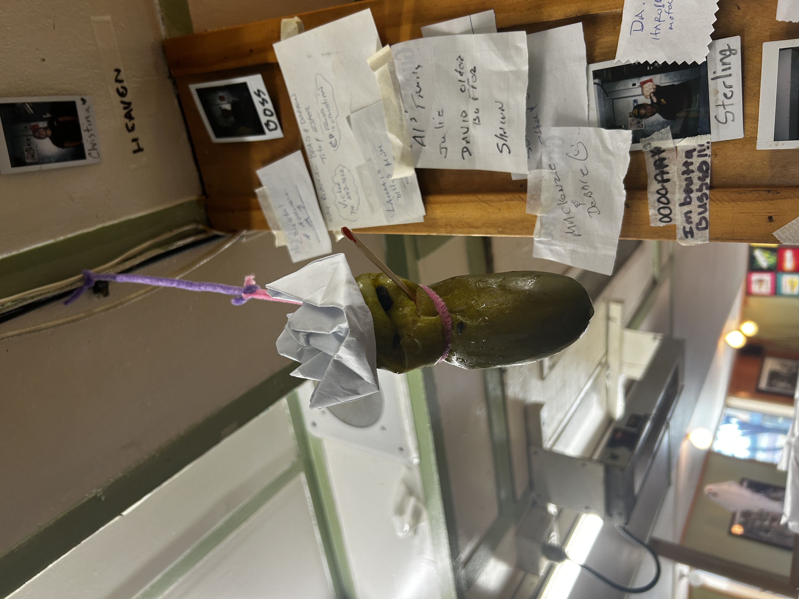
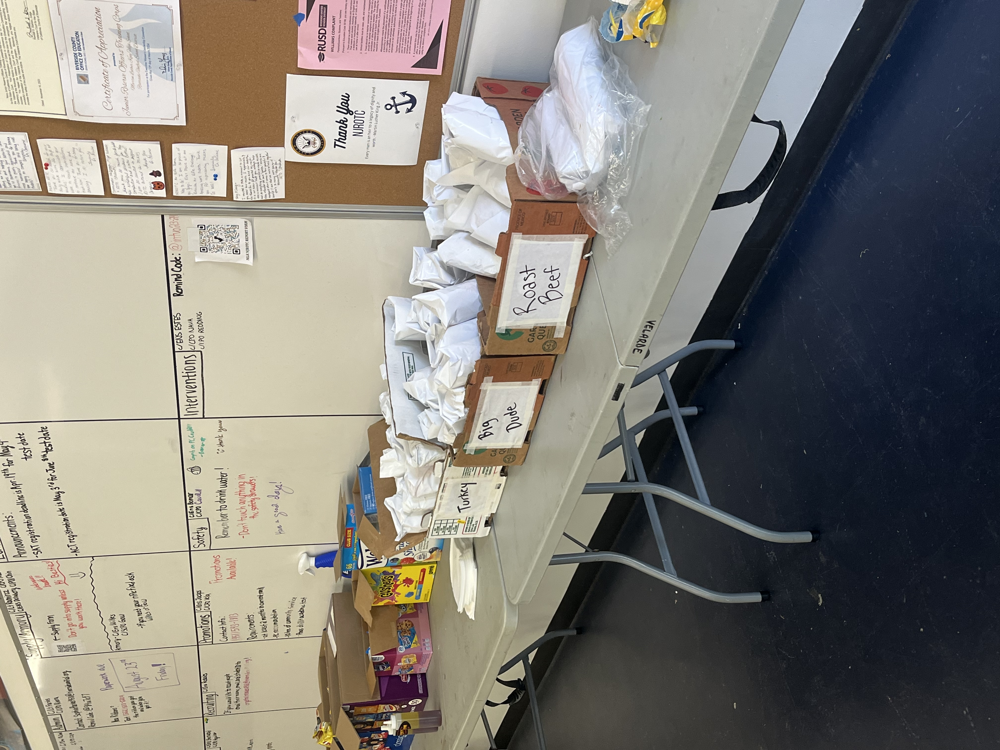
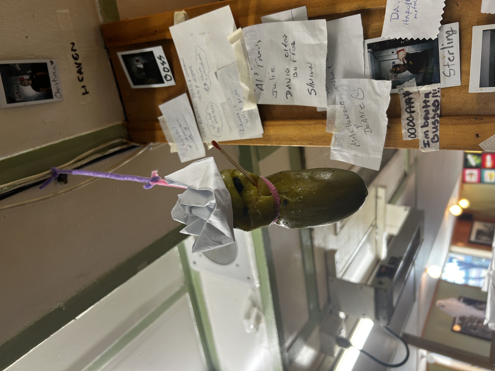
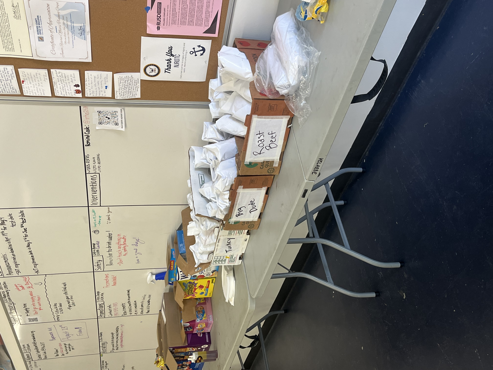
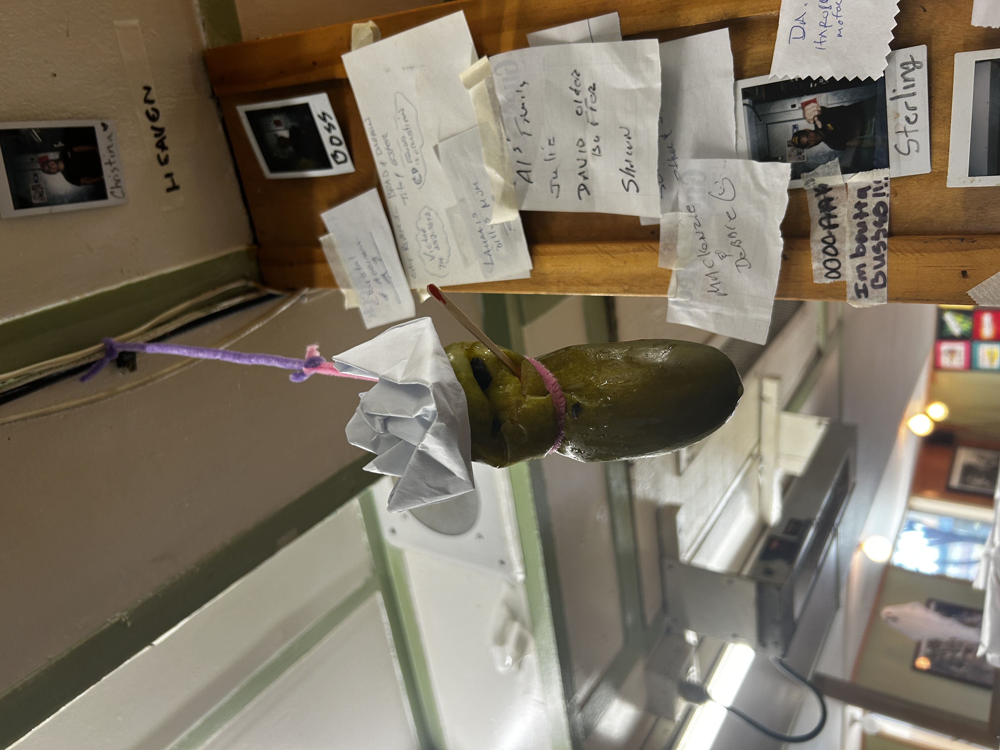
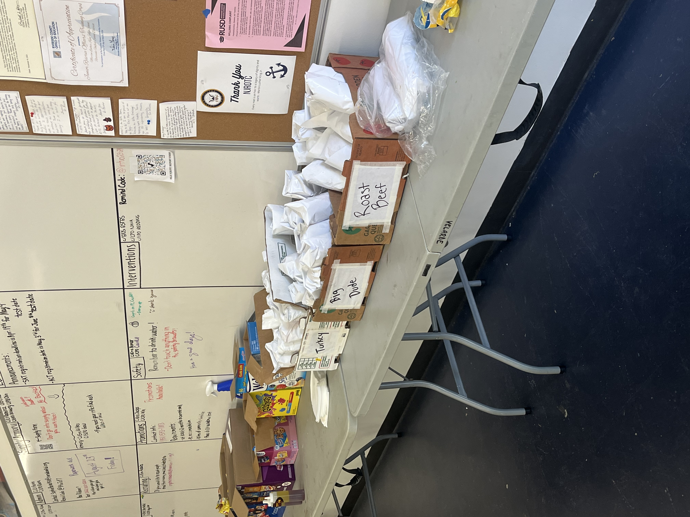

Prince Ketcha
Detail-oriented and analytically driven researcher with a focus on international politics and African dance aesthetics. Experienced in synthesizing complex theories in political science, including realism, liberalism, constructivism, and feminist standpoint theory.
Skilled at distilling intricate concepts, such as surplus value and power dynamics, into accessible summaries and insights. Proficient with texts like International Politics: Power and Purpose in Global Affairs by Paul D'Anieri, with a solid grasp of the interplay between power structures and global affairs.
In-depth understanding of African dance aesthetics, particularly through the works of Kariamu Asante, with a commitment to exploring cultural expression and identity. Highly adept at interdisciplinary research, integrating political and cultural perspectives to enrich analyses and discussions. Known for a rigorous approach to academic assignments and a commitment to producing clear, concise, and comprehensive summaries of complex topics.
Experience
Subber
• Assistant Manager at Sub Station
• Media account personal
• Catering specialist
Activist
• Systemic Racism research
• Civic engagement seal
• District Speech
• Activism on campus
Education
UC Riverside
University of California Riverside
University of California Riverside
Portfolio
 






